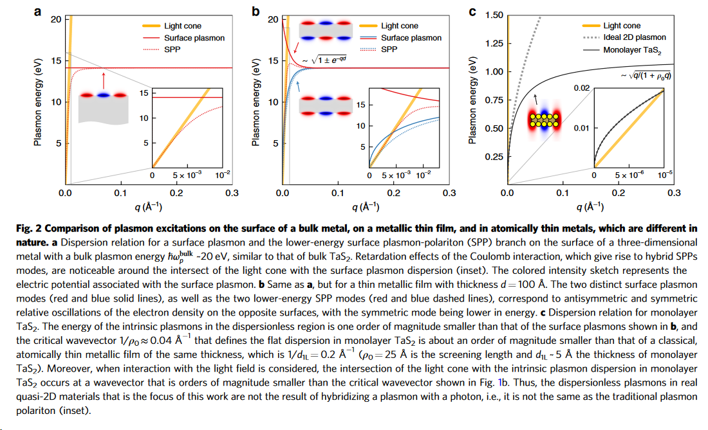
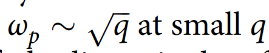

Probing strongly coupled liquids with plasmonics
Table of Contents
1 Intro
You can find a very simple presentation in these lecture notes. These kind of effects have been known since the 1960s and have been studied both theoretically and experimentally.
Nowadays, have become even more relevant due to easier access to experimental techniques. An important advantage they have is due their sensitivity.
2 Surface plasmon polaritons (SPP).
This is the simplest case of a perfect interface between two different materials, e.g. air and metal, and solve Maxwell's equations:
with
Here one is making implicitly the assumption that \(\epsilon = \epsilon ( \omega)\), otherwise you would need to account or terms like
as discussed by Maier, after Eq. (2.1)
Here the crucial point is that, the dielectric function at a given frequency has to be negative, leading a mode solution for the TM (transverse magnetic) polarization that has an evanescent profile along the axis perpendicular to the plane z, whereas it can still propagate along the plane.
You start with following plane wave ansatz for each material:
to solve Maxwell's eqs. and the following continuity relation at the air-metal interface
This will have the relation:
These are indeed imaginary both. The other one left (we took \(k_y=0\) for simplicity) is the x-component \(k_x\) which is, obviously, the both materials.
And so the dispersion relation of the mode is given by:
\begin{equation} k_x^2 = \frac{\omega^2}{c^2 } \frac{\epsilon_1 \epsilon_2} {\epsilon_1+ \epsilon_2} \end{equation}An argument of why only TM are of interest is given in Maier:
This is applicable for infinite surface case, at least. One might need to review this also when dealing with a non-local dielectric function.
This is almost always solved using a Drude-like plasmon to the get:
The dielectric line with respect to air or vacuum is important because SPP don't couple to any modes outside. The only way to excite them is through a prism of dielectric material whose dielectric constant is bigger than the air's one, working under total internal reflection.
3 Long-range surface plasmon polaritons
If, instead semi-infinite metal, you take a thin metal slab, sandwich between semi-infinite dielectrics:
then you get two solutions that are both valid plasmon polaritons, with the following dispersion (see Plasmonics book):
For a plasmon like dielectric function you get:

where the upper-mode is known as the long-range spp.
4 Surface plasmon polaritons (SPP) in 2D.
Surface plasmon polaritons also show up when considers thin metallic strips. In a recent paper on quasi-2D-metals, you can see the effect that has over the shape of the plasmon-polariton dependence on the wave-vector:

Here, panel (a) corresponds to the semi-infinite metal, showing how the dispersion beds from a flat plasmon to the SPP. Panel (b) same but a finite-length metallic strip of 100 Angstrom thick, showing both plasmonic modes. Panel (c) corresponds to a quasi 2D metallic strip, whose thickness is about 5 Angstrom.
In the latter case, the monolayer shows the standard 2D dispersion

Other papers for this 2D case:
5 Papers dealing with spatial dependence for 3D semi-infinite dependence.
- Surface Plasmon in a Semi-Infinite Free-Electron Gas
- Theory of surface plasmons and surface-plasmon polaritons This is more a review than anything but treats the problem self-consistently
- Self-consistent solution of the Kohn-Sham equations for systems with inhomogeneous electron gas
- Current-induced spin polarization at the surface of metallic films: a theorem and anab initio calculation
- Conductivity of a semi-infinite electron gas: Effective "optical" surface region
- Semi-infinite jellium: Step potential model
5.1 Sum rules semi-infinite electron gas
6 Possible problems we could work on
- The simplest case would be to deal the 3D case in the short-wavelength approximation (k=0) for metal or semiconductor, where correlations among multiple species are important. Remember that we need to have a relatively perfect interface for the polariton to propagate.
- Next would be a 2D case, where we can work out exactly all moments for arbitrary wave-number. Especially, if one can probe the case of a bilayer where there is an optic out-of-phase-mode using plasmon polaritons.
- Last, work on the full 3D case finding how the moments change with a semi-infinite metal.